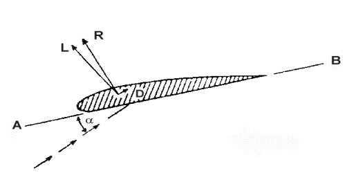
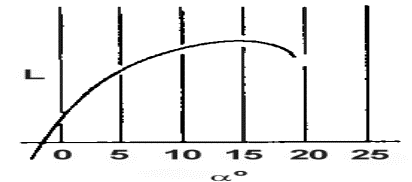
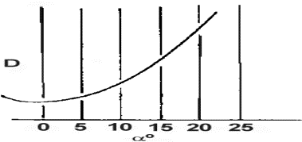
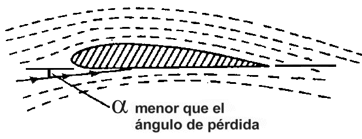
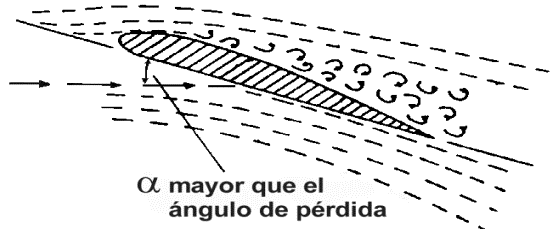

Teoría de Vuelo para Pilotos de Planeador
Stafford Allen
Capítulo III
RESISTENCIA, SUSTENTACIÓN, PERFIL ALAR
No hace
falta mucha inteligencia para advertir que si desplazamos un objeto a través del aire,
habrá alguna resistencia actuando sobre el objeto en dirección opuesta a la del
desplazamiento. Llamamos a esto resistencia (que se representa con la letra D por
venir del inglés Drag). De la misma manera, si hacemos volar un planeador
en línea recta a velocidad constante deberemos disponer las cosas como para que en el
planeador haya fuerzas que se opongan y equilibren exactamente esta resistencia y también
el peso del planeador. El peso del planeador es mucho mayor que la resistencia -15
o 20 veces más-, por lo cual resulta claro que lo que necesitamos para soportar la
máquina en el aire es algún elemento que produzca una gran fuerza para equilibrar el
peso del planeador y que, a su vez, ofrezca una pequeña resistencia al avance. Este algo
es el ala y, con mucho, el más importante elemento del planeador.

Figura 1
Sustentación es la fuerza que se desarrolla en ángulo recto respecto de la
dirección de ataque del aire (que es igual y contraria a la dirección de la trayectoria
del ala en el aire).
Ángulo de ataque es el determinado por la cuerda alar y el desplazamiento del
aire.
Debe advertirse que la figura 1 ha sido dibujada deliberadamente inclinada para
evitar cualquier confusión con respecto a la horizontal o la vertical.
Por
supuesto, hay muchas formas diferentes de perfiles que tienen nombre propio, y las
características de muchos cientos de ellos han sido investigadas muy cuidadosamente.
Algunos son muy gruesos y presentan una gran curvatura. Son los que proporcionan, por lo
general, una gran sustentación pero al mismo tiempo ofrecen gran resistencia, lo que los
hace algo ineficientes a altas velocidades, aunque son excelentes a bajas velocidades.
Otros son muy planos y pueden presentar una superficie inferior convexa. Estos presentan
poca resistencia y aunque pierden algo de sustentación dan a una máquina buenas
velocidades desde que pueden volar rápido sin que la resistencia se incremente
mayormente.
No podemos
hacer nada con respecto a los perfiles alares de nuestros planeadores. Los mismos fueron
establecidos y construidos por los diseñadores. Sin embargo, resulta interesante dar un
vistazo al hangar de cualquier club de planeadores y advertir los perfiles alares de las
máquinas, para tratar de visualizar cuál fue el pensamiento del diseñador cuando
decidió emplear un perfil determinado.
Las máquinas de entrenamiento
presentan un perfil de un espesor generoso, con buenos alabeos, para proporcionar una
performance razonable y un vuelo limpio. Los planeadores con montantes como el Specht
tienen perfiles gruesos y mayor curvatura. Aquí el diseñador ha buscado en primer lugar
máxima sustentación y buenas cualidades de vuelo a vela, características que sólo
pueden lograrse a velocidades razonablemente bajas. Por sobre estas velocidades la
resistencia se hará excesiva y se verá afectado el ángulo de planeo. Los planeadores de
alta performance tienen también perfiles gruesos, pero esto se debe en parte a la
necesidad de disponer en el ala de un larguero resistente, desde que por lo general estas
máquinas no tienen montantes. Estos perfiles alares, sin embargo, tienen muy pequeña
curvatura y son planos o casi planos en su cara inferior, con lo que proporcionan una baja
resistencia a alta velocidad al precio de sacrificar alguna sustentación a baja
velocidad. Estas máquinas pueden volar rápido casi con la misma eficiencia que lo pueden
hacer a baja velocidad. Pueden desarrollar una alta velocidad.
En
los últimos años ha invadido el mundo volovelista un nuevo tipo de perfil alar y en la
actualidad es casi universal en las máquinas de alta performance. Es el denominado perfil laminar. Por supuesto, hay muchas variedades de perfil laminar, pero
todas tienen la misma característica: la parte más gruesa del ala está situada
considerablemente desplazada hacia atrás. El efecto de este hecho es el de producir un
perfil que presenta una excepcional baja resistencia cuando se vuela a pequeños ángulos
de ataque.
El aire
generalmente fluye en forma laminar sobre un ala hasta el punto donde es más gruesa, pero
allí tiende a volverse turbulento en la capa límite. Esta es la razón por la cual se
encuentra tan atrás el punto más grueso de un ala laminar. Puede advertirse también que
las curvas de una sección de un ala laminar son muy suaves. Estas características
tienden a mantener el flujo laminar sobre una gran porción del ala. Típicos ejemplos de
máquinas con alas de perfil laminar son los veleros de alta performance de plástico
(como los Cirrus, Nimbus, ASW, DG, etc.).
Imaginemos
que la figura 1 representa un pequeño modelo de un perfil alar situado en un túnel de
viento. Lo que queremos saber es cómo varían las fuerzas de sustentación (L) y
resistencia (D) en diferentes circunstancias y cuáles son los factores que las afectan.
En primer lugar, ambas son afectadas por la densidad del aire. Cuanto mayor sea la
densidad, mayores serán la resistencia y la sustentación. Esto parece sumamente natural
y obvio. No podemos hacer nada con respecto a la densidad del aire, por lo que nos
olvidaremos de ella por el momento advirtiendo, simplemente, que si tratamos de hacer un
remolque por torno en la cima del Everest encontraremos que nuestro planeador carece casi
de sustentación.

Figura 2
Además,
adviértase que a medida que a se incrementa, lo mismo ocurre con la sustentación en una
proporción más o menos directa. Esta situación no se mantiene indefinidamente: por lo
general, cuando a llega a más o menos 15º la sustentación no se incrementa
más y cualquier aumento posterior de a da como resultado una sustentación menor. Este punto es el de
pérdida de sustentación del perfil y el ángulo al cual tiene lugar se denomina ángulo de pérdida. Resulta curioso comprobar que todos los perfiles alares entran
en pérdida más o menos al mismo ángulo y si partimos de la base de que dicha pérdida
tiene lugar a unos 15º o 16º, no tendrá importancia cuál es el perfil que estamos
utilizando.

Figura 3
Este
fenómeno de la pérdida es muy importante y lo investigaremos luego más profundamente.
Mientras tanto, veamos qué pasa con la resistencia cuando variamos el ángulo de ataque
si mantenemos todo lo demás constante. La figura 3 muestra que la resistencia se comporta
mas o menos como esperamos que lo haga. Está en su punto menor cuando a vale alrededor de
Oº, o en algunos perfiles alares quizás 2º; a medida que aumenta a la resistencia se
incrementa, pero más rápidamente. Cuando llegamos a la pérdida la resistencia comienza
a aumentar más rápidamente aun.

Figura 4
Con
respecto a la pérdida comprenderemos su mecanismo si nos damos cuenta exactamente de qué
le ocurre al aire cuando un perfil alar entra en pérdida. El comportamiento de la
sustentación se vuelve más comprensible. La figura 4 es un diagrama de un perfil alar
que vuela a un pequeño ángulo de ataque, sin estar en pérdida. El aire fluye
ordenadamente por encima y por debajo y en la parte inferior se forma una zona de alta
presión, mientras arriba hallamos un región de baja presión. Si lo preferimos podemos
verlo de la siguiente manera. En la parte inferior el aire es obligado a cambiar de
dirección hacia abajo por la superficie inferior del perfil. Este cambio de dirección
requiere una fuerza y la reacción del aire sobre el perfil proporciona parte de la
sustentación. En la superficie superior las cosas son un poco más complicadas. Aquí el
aire tiene que deslizarse sobre una curva pronunciada y nuevamente se requiere una fuerza
para hacer que el aire cambie de dirección. Esta fuerza es proporcionada por el hecho de
que hay una reducción de presión en la superficie superior del perfil comparada con la
presión atmosférica o estática. Esta reducción de la presión (o succión, si se
prefiere) es más importante que el aumento de la presión en la parte inferior del perfil
y en condiciones normales contribuye con la mayor parte de la sustentación.

Figura 5
En la figura 5 el perfil alar está volando a un ángulo de ataque mayor que el
de pérdida. Está en pérdida. Adviértase que la superficie inferior está cumpliendo
-más o menos- con su función, pero el aire no puede dar la vuelta a la esquina sobre la superficie superior y se disgrega en una serie de
pequeños remolinos. La parte superior no trabaja y la sustentación disminuye en forma
pronunciada. La turbulenta masa de pequeños remolinos crea además un considerable
incremento de la resistencia.
Esta que
hemos dado es una simplificación extrema, pero constituye una forma correcta de ver las
cosas.
Hay otra
cosa importante que considerar respecto a estas fuerzas de sustentación y resistencia.
Nos referimos al punto del perfil alar en que dichas fuerzas actúan. Llamamos a este
punto centro de
presión. Si hiciéramos un control para
determinar dónde reside este centro de presión hallaríamos que el mismo se desplaza a
medida que cambia el ángulo de ataque. A ángulos de ataque comunes el centro de presión
se halla ubicado a un cuarto o 25% de la longitud de la cuerda, partiendo del borde de
ataque del perfil alar. A pequeños ángulos está más hacia atrás; a Oº tal vez a
mitad de camino. A medida que incrementamos el ángulo de ataque el centro de presión se
mueve hacia adelante hasta que, justamente antes de la pérdida comienza a desplazarse
hacia atrás nuevamente. Este movimiento del centro de presión es más bien algo enojoso
como veremos luego, cuando hablemos de estabilidad y control.
Se
han hecho infinitos esfuerzos, con mayor o menor éxito, para diseñar un perfil alar con
un centro de presión estacionario. Desgraciadamente lo que se gana por un lado se pierde
por el otro y todas estas tentativas dan como resultado un aumento en materia de
resistencia o una disminución de la sustentación. En nuestros planeadores queremos
eficiencia en el vuelo y estos inconvenientes resultan muy caros. Por lo tanto, aceptamos
esta dificultad de un centro de presión desplazable y la solucionamos instalando
superficies de cola para controlar sus movimientos erráticos.
Volver Arriba